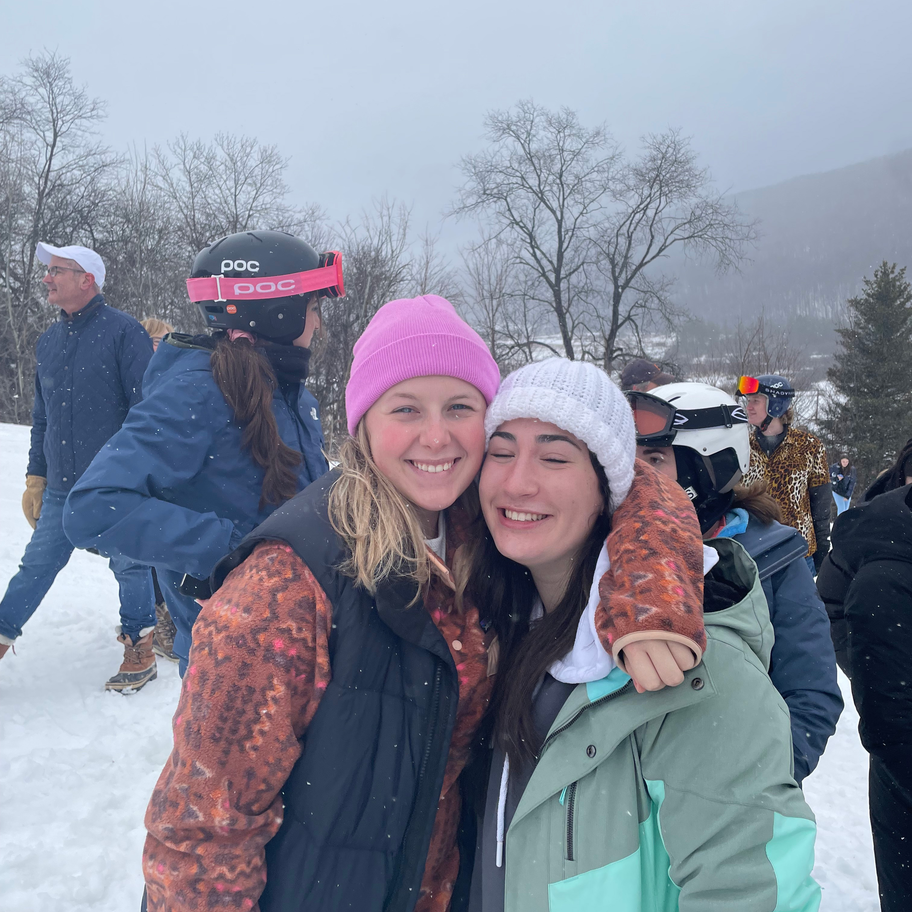

Spotted: Not in school
When I’m not in class, I’m usually at a TNH or Ski Club event! TNH is the top advertising club in
the country for college media creation. We take on real clients and produce professional,
strategic material. In the past I have worked with Heritage Cafe and Luna Cat Cafe all based in
Syracuse. The Syracuse Ski Club is where the cold Syracuse winters get put to good use. I ski
twice a week at local mountains and take occasional weekend trips. I have met the best people
and had amazing experiences.
In addition to my crazy schedule I love to take on personal creative projects when I have the
time. I have been loving sewing and gaining so much knowledge in the past couple of months. I
love the technical skill and math knowledge that sewing uses to create a one of one piece. Here are some of my recent works: